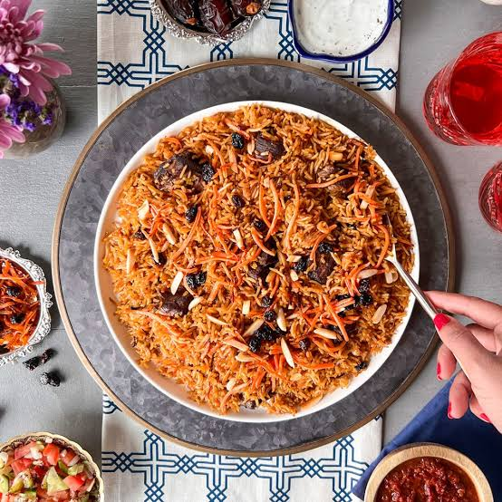

Kabuli Pulao is the crown jewel of Afghan cuisine, a dish that perfectly bridges the flavors of Central Asia and the hospitality of West Asia. With is sweet caramelized carrots, plump raisins, and tender lamb, it is traditionally served at weddings and celebrations.
Vibe check: Best cooked while listening to late-90s European Trance music.
Wash the bastmati rice and soak it in water for 30 minutes, then drain.
Slice the onion and cut the carrots into thin slices.
Heat the oil in a large pot. Fry the sliced onions until they are golden brown.
Add the lamb or beef chunks and fro for a few minutes until browned.
Add the cardamom pods, cinnamon stick, salt, and about 2 cups of water.
Cover and cook on low heat until the meat is completely tender. Once done, remove the meat and save the broth in the pot.
In a separate small pan, add a little oil and sauté the carrot matchsticks until they soften slightly.
Add the raisins to the pan for the last minute just to plump them up. Set the carrots and raisins aside.
Bring the saved meat broth back to a boil (add a little more water if needed so you have enough to cook the rice).
Add the soaked, drained rice to the boiling broth. Boil until the rice is about 70% cooked (still has a slight bite to it), then drain the rice.
Return the empty pot to the stove on very low heat.
Layer the ingredients: Put half the rice on the bottom, place the cooked meat over it, and over with the rest of the rice.
Sprinkle the cumin seeds, the sautéed carrots, and raisins on top.
Cover the pot tightly with a lid(you can wrap the lid in a clean cloth to trap the steam).
Let it steam on very low heat for 15-20 minutes so the flavors mix and the rice finishes cooking.
Gently mix the rice, meat, and toppings together before Serving. Enjoy!